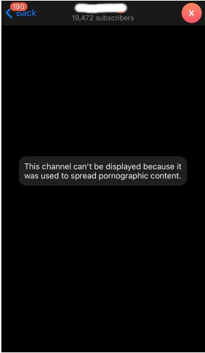
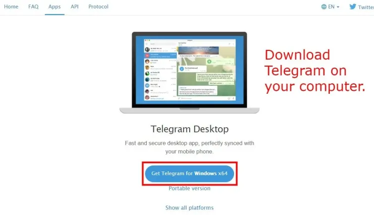
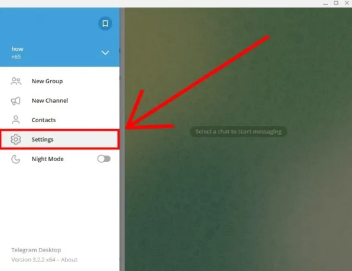
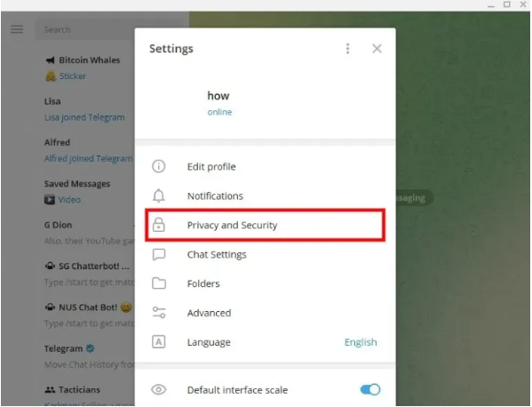
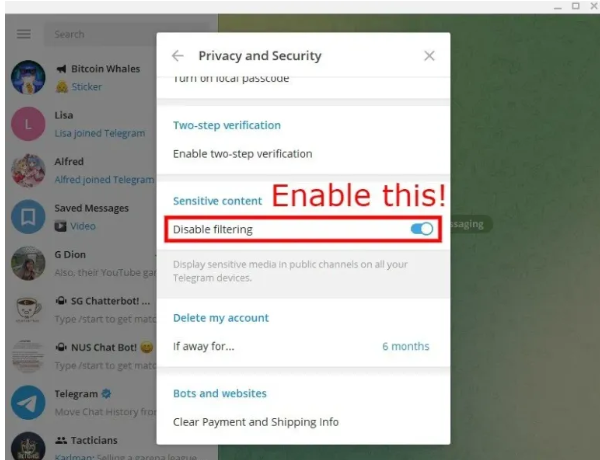

如何解决 Telegram 上“该频道无法显示”的问题
您在 Telegram 上收到“此频道无法显示”错误吗？
以下是完整的错误消息：“该频道无法显示，因为它被用来传播色情图片内容”。
当您尝试加入包含成人内容的Telegram 频道时，会出现此错误消息。
这包括不适合工作安全的图像或视频。
因此，如果启用敏感内容过滤器，频道将被阻止。
不幸的是，您只能在桌面版 Telegram 上禁用过滤器。
在本指南中，您将了解如何解决iPhone 和 Android设备上 Telegram 上的“此频道无法显示”问题。
为什么 Telegram 说该频道无法显示？

要修复 Telegram 上“此频道无法显示”的问题，您需要下载Telegram桌面版。
接下来，打开 Telegram Desktop > 扫描二维码 > 菜单 > 设置 > 隐私和安全 > 打开“禁用过滤”。
打开“禁用过滤”后，您将能够访问 Telegram 上被阻止的频道。
请注意，您无法禁用 Telegram 应用程序上的敏感内容过滤器，因为它没有。
要禁用它，您需要使用桌面版 Telegram。
1. 在电脑上下载 Telegram

选择“获取 Windows x64 版 Telegram”（如果您使用的是 macOS 或 Linux，请选择“显示所有平台”）。
单击“tsetup.exe”安装 Telegram。
注意：您只能在桌面版 Telegram 上禁用内容过滤器，因此您需要下载它。
2. 使用 Telegram 应用程序扫描二维码
打开 Telegram 桌面版。
打开 Telegram 应用程序并转到“设置”。
选择“设备”，然后选择“扫描二维码”。
扫描屏幕上的二维码即可登录。
3. 打开菜单
扫描二维码后，您将自动登录 Telegram。
现在，您将能够看到所有消息。
单击左上角的菜单图标打开菜单。
点击“设置”

该菜单包含多个选项，例如“新组”、“新频道”等。
选择“设置”以打开您的 Telegram 设置。
点击“隐私和安全”

“设置”页面包含多个选项，例如“编辑个人资料”、“通知”等。
选择“隐私和安全”以转到您的隐私和安全设置。
启用“禁用过滤”
向下滚动页面，直到到达“敏感内容”设置。
启用“禁用过滤”选项。
强制关闭手机上的 Telegram 应用程序，然后重新打开。
默认情况下，“禁用过滤”选项处于禁用状态，因此如果您想查看敏感媒体，则需要启用它。
现在，您可以尝试加入出现“此频道无法显示”错误的频道。
您应该能够在 iPhone 和 Android 设备上访问该频道而不会出现错误。
这是因为该选项将允许 Telegram 在您所有设备上的公共频道中显示敏感媒体。